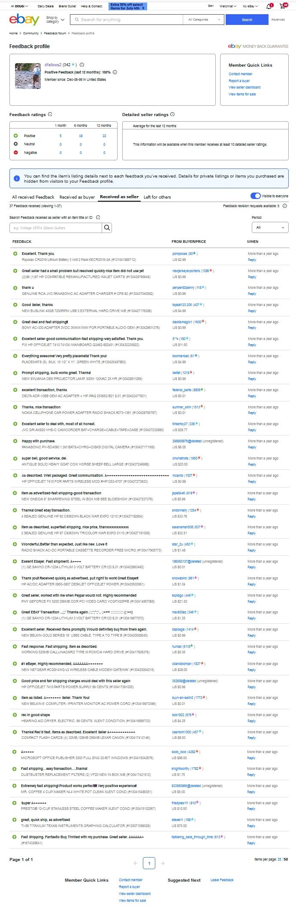

| Pay Rate : $8 / hour | Pay Rate : $9 / hour | Pay Rate : $10 / hour | Pay Rate : $12 / hour | Pay Rate : $14 / hour | Pay Rate : $25 / hour | Pay Rate : $50 / hour |
| Weekly Net Pay : $267.62 | Weekly Net Pay : $297.76 | Weekly Net Pay : $328.90 | Weekly Net Pay : $388.18 | Weekly Net Pay : $448.46 | Weekly Net Pay : $761.22 | Weekly Net Pay : $1404.57 |
| Monthly Net Pay : $1070 | Monthly Net Pay : $1191 | Monthly Net Pay : $1315 | Monthly Net Pay : $1552 | Monthly Net Pay : $1793 | Monthly Net Pay : $3044 | Monthly Net Pay : $5618 |
| Weekly Gross Pay : $320 | Weekly Gross Pay : $360 | Weekly Gross Pay : $400 | Weekly Gross Pay : $480 | Weekly Gross Pay : $560 | Weekly Gross Pay : $1000 | Weekly Gross Pay : $2000 |
| Yearly Gross: 16000 | Yearly Gross: 18000 | Yearly Gross: 20000 | Yearly Gross: 24000 | Yearly Gross: 28000 | Yearly Gross: 50000 | Yearly Gross: 100000 |
| Social Security : -$19.84 | Social Security : -$22.32 | Social Security : -$24.8 | Social Security : -$29.76 | Social Security : -$34.72 | Social Security : -$62.0 | Social Security : -$124.0 |
| Federal Income Tax : -$25.9 | Federal Income Tax : -$30.7 | Federal Income Tax : -$35.5 | Federal Income Tax : -$45.1 | Federal Income Tax : -$54.7 | Federal Income Tax : -$124.28 | Federal Income Tax : -$350.43 |
| MO Income Tax : -$2.0 | MO Income Tax : -$4.0 | MO Income Tax : -$5.0 | MO Income Tax : -$10.0 | MO Income Tax : -$14.0 | MO Income Tax : -$38.0 | MO Income Tax : -$92.0 |
| Medicare : -$4.64 | Medicare : -$5.22 | Medicare : -$5.8 | Medicare : -$6.97 | Medicare : -$8.12 | Medicare : -$14.5 | Medicare : -$29.0 |
http://dfellows.rf.gd/resume/vancouverJuniorClientServiceTechnologist.html
http://dfellows.rf.gd/resume/printoryana.php
http://dfellows.rf.gd/resume/printsbu.doc
http://dfellows.rf.gd/resume/resume3.doc
http://dfellows.rf.gd/resume/resume4.doc
http://dfellows.rf.gd/resume/resume4.txt
http://dfellows.rf.gd/resume/resume6.txt
http://dfellows.rf.gd/resume/resumeoryana.doc
http://dfellows.rf.gd/resume/dfellows.rf.gd-DouglasRaeFellows.pdf
http://dfellows.rf.gd/resume/dfellows.rf.gd-DouglasRaeFellows8.pdf
http://dfellows.rf.gd/resume/dfellows.rf.gd-DouglasRaeFellows9.pdf
Honest people pay a premium to have me in their life.
My mother had 18 years of marriage, three healthy children, and a husband with a broken back before I was born.
Instead of honoring her vows she had two more children and raised us to fill in the gaps in her life.
It all worked out in the end. Mom lived two months past her prognosis. She died the first time I missed eating a meal with her. I don't wake up as often scared my dad is going to lay a hand on me.
What I want:
What I will settle for:
When she was dying she wanted to see my dad.
When my dad and I got to the nursing home parking lot he called the police and my dad, the police and I sat in the parking lot until I gave up and took my dad home.
My mother died the day I missed eating all her meals with her. She lived two months past her prognosis.
My dad has been dead 12 years and I still occasionally wake in the middle of the night scared he is going to lay his hand on me.
I was sorry to read about Ken. I liked him. You should have had more time together. He was a good person and a good father. How are you?
It is a testament to Ken's good character that he welcomed me into his home. You are lucky to have Angel's children close by. I am sure they are a comfort to you. I have nothing but fond memories of being invited into your home. Thank you.
We are who we are. I am sorry to contact you under these circumstances.
I am filling out an application for work. It requires an essay on my accomplishments and the phone numbers of the people who can verify what I say. 64 years and all I have are two people who know me and one of them I have not spoken to since 1968. Is Colleen's phone still 202-244-2046? One of my accomplishments is ushering at the National Presbyterian Church and I would like Colleen to verify that.
I hope you are well.
Douglas Rae Fellows
417-399-9579
Hi Keith, my name is Doug Fellows.
I read your Craigslist ad, e-Commerce Manager wanted.
I will and can do what ever has to be done.
Work the sales floor, refurbish appliances or part out an appliance and sell it on ebay, I can do it.
I owned my own business. I have my own tools. I have parted out appliances before. I build custom shipping boxes.
I am moving to Traverse City to be near my brother Dr. Neal Fellows and his wife, Deborah.
I have sold on ebay since 1999. This is my ebay feedback.

From 2013 to 2019 I worked for livebolivar.com, a property rental / management company. AJ Ellis, the owner, will be happy to talk to you. 417-327-3911 M-F 9-5 Central Time.
I was responsible for designing and maintaining a website to lease ~56 homes and ~100 apartments. I wrote all the code, created all the content, wrote the descriptions, shot the video, created the slideshows and took the photos. I was responsible for buying appliance parts online, repairing the appliances and helping AJ repair properties. I have looked up part numbers for washers, dryers, dishwashers, refrigerators, ovens, .... Every appliance in the home.
I do not have any active ebay listings I can show you but I do have two Craigslist Ads:
https://springfield.craigslist.org/grd/d/bolivar-house-plants-pots-saucers/73412727livebolivar/
https://springfield.craigslist.org/app/d/bolivar-workshop-microwave-oven-heat/7341277219.html
I am dependable, detailed oriented, have good organizational skills and will be living downtown.
Please contact me if you have any questions.
Doug Fellows
417-399-9579
https://nmi.craigslist.org/ofc/d/traverse-city-commerce-manager/7326784625.html
Should I remove or use the following?
The last repair I did was a washing machine transmission drive shaft. If the machine is old, If you can find a good machinist he can spray weld the corrosion caused by bleach and hot water at a profitable cost and sell the machine for more than you will get parting it out.
Hi Keith, my name is Doug Fellows.
I read your Craigslist ad, e-Commerce Manager wanted.
I will do what ever has to be done.
You want me to part out a washing machine, list the parts on ebay and ship the parts when sold I can do that. I build my own custom shipping boxes. I can part out any appliance. I have my own tools. I have done it before.
I have sold on ebay since 1999. This is my ebay feedback.
From 2013 to 2019 I worked for livebolivar.com, a property rental / management company. AJ Ellis, the owner, will be happy to talk to you. 417-327-3911 M-F 9-5 Central Time.
I was responsible for designing and maintaining a website to lease ~56 homes and ~100 apartments. I wrote all the code, created all the content, wrote the descriptions, shot the video, created the slideshows and took the photos. I was responsible for buying appliance parts online, repairing the appliances and helping AJ repair properties. I have looked up part numbers for washers, dryers, dishwashers, refrigerators, ovens, .... Every appliance in the home.
I do not have any active ebay listings I can show you but I do have two Craigslist Ads:
https://springfield.craigslist.org/grd/d/bolivar-house-plants-pots-saucers/73412727livebolivar/
https://springfield.craigslist.org/app/d/bolivar-workshop-microwave-oven-heat/7341277219.html
I am dependable, detailed oriented, have good organizational skills and will be living downtown.
I am moving to Traverse City to be near my brother Dr. Neal Fellows and his wife, Deborah.
I look forward to working for you.
Doug Fellows
417-399-9579
https://nmi.craigslist.org/ofc/d/traverse-city-commerce-manager/7326784625.html
WORKSHOP MICROWAVE OVEN. USED SHARP R-410LW 1100W Workshop microwave oven. Heat you materials the safe way Windows server for public administrators (not technicians), powershell, html, css, php, MySQL, javascript, Git, linux, Node, Sass, Apache. I started my bachelors degree in 1975. My father got a PhD and nearly a second one without going into debt; My mother a Masters. I would finish my Bachelors if I could do it without going into debt and I could study: Windows server for public administrators (not technicians), powershell, html, css, php, MySQL, javascript, Git, linux, Node, Sass, Apache. In short, Web Development. I prefer to work while I study. I have applied for 30 jobs from Alaska to South Carolina and New Hampshire to Hawaii. A friend says I want to pick out and train one of your local boys to test milk and mix forage for you, someone who will do it for the rest of his life. If your girlfriend is a good person just throw this out. I envy you getting up at 4AM every day to earn a living I am a retired traveling salesman and I have to leave every summer and get slapped a few times to get my girlfriend to be nice to me. My girlfriend has a heart of stone and I have to leave every summer and get slaped a few times just to get her to be nice to me. Does your girlfriend have a heart of stone? I want to warn you. I am a big city boy who was born in a small town. When I was a kid I used to climb up the TV antenna pole and sit on top of the house. Can you settle a bet for me? My girlfriend says you’re a small scale operation using outdated equipment that cares more about loyalty than product purity and is looking for a local boy to do their milk testing and forage mixing. I say you’re a first tier large scale commercial dairy farm using mostly brand new equipment, that puts purity above all else and is as honest as the day is long. My name is Douglas Rae Fellows. I am a retired traveling salesman, website designer, and a student of Dr. Samuel J. Perlmutter, deceased, Chemist at the National Institute of Standards and Technologies, Gaithersburg, Maryland. He came to teach at our school when he was forced into retirement due to his age. I got straight A's in his class for two years and went on to study chemistry at the University of Maryland, College Park. I still use what he taught me to this day. I was born at the Haywood County hospital, Waynesville, North Carolina, USA Sunday, June 30th, 1957. I would like to work for you. first job I interviewed for was as a lab technician. Your ad is forcing me to make an assumption, are you looking for somebody to milk cows, somebody to analyze milk or both? https://twinfalls.craigslist.org/trd/d/burley-lab-technician/7334349005.html Sent from my iPhone If given time I will tell this story well. You have to remember these three things: No one ever told me to have money or someone who loved me at the end and there's not a single bad apple in this family of 16 adults. Today I asked my sister why no one ever told me, she didn't answer. When I tried to force my dying father to see his dying wife in the nursing home he called the police. And Grappone automotive told me to walk, bike, run or kayak to the dealership. I would like to work for you. Find me something to do , I do not want to marry a wealthy ascetic. Douglas Rae Fellows http://dfellows.rf.gd/resume http://dfellows.rf.gd dfellows2@gmail.com 417-399-9579
Video laptop repair:
google account guestmail99@gmail.com
My Qualifications
1992 to present: I install, maintain, repair Windows PC hardware, software, and networks.
I design and develop websites.
I operate the following Microsoft products:
Windows 10 Pro, PowerShell, Edge, Office, Word, Excel, Outlook, Access.
The only thing I like to do with apples are eat them.
I operate the following products:
godaddy.com, cPanel, Cloudflare, Google, Firefox, Chrome, Edge, Opera, Safari, Notepad++,
Paint Shop Pro 7, XAMPP, FileZilla, Dreamweaver CS5, Android, iOS, Linux, Canon Rebel XT,
Olympus SP-350.
On a personal note:
I do not smoke.
I received my second dose of Moderna's Covid-19 vaccine April 1st, 2021.
Cycle Alaska is looking to hire a full-time, year-round operations manager who is passionate about the outdoors, loves providing excellent customer experiences, and enjoys learning new things.
This job has many moving parts. For example, you might be receiving and logging in a bike order one moment and the next, helping a kid accessorize their very first bike. Flexibility is key! The perfect candidate has a positive attitude, knows how to prioritize thinking of the customer first, is willing to jump in and learn, is detailed, and strives always to provide stellar customer service.
About Us:
Cycle Alaska is a full-service bike and tour company. We have been a part of the Juneau community for over 24 years. We pride ourselves on giving exceptional service and experiences while creating customers for life! We also take great pride in our team members and our work. Our team is one of our most important assets. And Cycle Alaska is always looking for opportunities to get our community out riding bikes.
We are open year-round for sales, rentals, repairs, and accessories. And, during the summer, we also offer bike tours to guests who visit Juneau independently and on cruise ships.
Cycle Alaska is proud to have been named one of America's Best Bike Shops by the National Bike Dealers Association 6 years in a row!
Now let's talk about you!
You are excited about the outdoors and pride yourself on providing outstanding customer experiences. You keep calm in hectic situations, have a positive attitude, and are willing to be flexible.
Previous experience in a supervisory position is preferred. We also have a few computer programs to learn, so being unafraid to learn new software and having some technical know-how will be essential.
Now for the technical stuff:
We require you to have at least six years of driving experience and a clean driving record for at least the last three years for our insurance. Bikes can sometimes be heavy, and we would like you to have the ability to lift around 55lbs occasionally. Not sure how to change a bike tire or what a bike chain looks like? That is no problem; we can teach you. We are looking for the right fit for our fantastic team.
Benefits:
Where you work and whom you work with is vital! We have a stellar team and have an excellent reputation in the community. We provide healthcare reimbursement, a bonus program, vacation days, and of course, bike and accessory discounts! Did we mention free lunch on Saturdays?
Does this sound like a good fit? Sweet! Please send a cover letter explaining why you would be a great fit, along with your resume.
https://www.youtube.com/watch?v=SkyQVN0iLUw
I should have told you: For the last 29 years I install, maintain, repair Windows PC hardware, software, and networks; I design and develop websites. My last commercial site was http://dfellows.rf.gd/resume/livebolivar.html
I am applying for the position: Desktop, Server and Network Technician, Full-Time
My name is Douglas Rae Fellows. I am a self-taught full stack developer. I was born at the Haywood County hospital, Waynesville, North Carolina, USA Sunday, June 30th, 1957. I would like to work for you.
I am single. I would like to live and work in Vancouver. I can be there in a week. I am looking for something different. With minimal supervision I can do everything your ad asks for.
I have been maintaining and repairing Windows PCs since 1992 when I installed Windows for Workgroups 3.11 for the first time. I currently maintain and repair four PCs running Windows 10 Professional, one Android device running Android 9 Pie and one Apple device running iOS 14.6
I shot this video of me replacing a laptop display in 2007 and posted it to YouTube.
https://www.youtube.com/watch?v=SkyQVN0iLUw
June 2013 to June 2019 I worked full-time for AJ Ellis, a property manager in Bolivar, Missouri. I designed, wrote the code, and created the content for livebolivar.com, a website to rent ~56 homes and ~100 apartments. When I would get tired of coding I would repair the ~56 homes and ~100 apartments he owns or was responsible for.
http://dfellows.rf.gd/resume/livebolivar.html
The only thing I like to do with apples are eat them.
I hope my website and resume will answer your questions. Contact me if they do not.
Thank you,
Douglas Rae Fellows
1-417-399-9579 M-Su 9am-10am your time
On April 27th 2021 I realized I was not special.
I would like to get an A in your INTRODUCTION TO THE OLD TESTAMENT (HEBREW BIBLE) (RLST 145) I could build a home with you as 25% of the foundation if you still profess: 18:31 brought me comfort: "Job, possibly the greatest book of the Bible, I won't give away my preferences there, challenges conventional religious piety and arrives at the bittersweet conclusion that there is no justice in this world or any other, but that nonetheless we're not excused from the thankless and perhaps ultimately meaningless task of righteous living." I need a group of like minded fellows. Douglas Rae Fellows dfellows.rf.gd dfellows.rf.gd/resume You are only a teacher. Do you still believe what you said? "Job, possibly the greatest book of the Bible, I won't give away my preferences there, challenges conventional religious piety and arrives at the bittersweet conclusion that there is no justice in this world or any other, but that nonetheless we're not excused from the thankless and perhaps ultimately meaningless task of righteous living." https://www.youtube.com/watch?v=mo-YL-lv3RY I need a group of like minded fellows. Where can I find a group of like minded fellows? Would I be making an ass out of you and me if I assumed you have blossomed because your children have become able to care for themmselves? Whatever the reason, the people who know you, are the luckiest people. Douglas Rae Fellows dfellows.rf.gd dfellows.rf.gd/resume
18:31 Job, possibly the greatest book of the Bible, 18:34 I won't give away my preferences there, 18:36 challenges conventional religious piety and arrives at 18:39 the bittersweet conclusion that there is no justice in this 18:43 world or any other, but that nonetheless we're not 18:46 excused from the thankless and perhaps ultimately meaningless 18:50 task of righteous living.
My name is Douglas Rae Fellows. I am a self taught full stack developer. I am a citizen of the United States. I would like to work for you. dfellows.rf.gd/resume Call or text Doug Fellows 1-417-399-9579 M-Su 5am to Noon Central Time dfellows2@gmail.com dfellows.rf.gd
I had a private tour of the United States White House in 1968. I used my first computer in 1969. I wrote Fortran at the University of Maryland, College Park where I majored in Chemistry, my favorite class was Calculus, and I received an A for an architectural drawing I did of the United States Capitol in 1975.
For the next 17 years I owned my own business, started teaching myself to become a full stack developer and refurbished computers for donation to a school for children in Croatia. From 1992 to 2007 I ushered at the National Presbyterian Church, Washington, DC, whose members / attendees included President of United States Dwight D. Eisenhower, Chief Justice of the United States Supreme Court Warren E. Burger, whose funeral service I ushered, Senator John Glenn, Secretary of State Condoleezza Rice, my parents Dr. and Mrs. J. Beverly Fellows, who are interred there, and my wife Colleen Flynn to name just a few.
In 2007 I followed my parents to Missouri and cared for them till their death in 2009.
For the next ~10 years I concluded teaching myself how to become a full stack developer and worked for AJ Ellis 417-327-3911 M-F 10-5 Central Time, a property manager, buying parts and supplies, doing repairs, remodeling houses and designing and developing his website livebolivar.com
My Qualifications: Self-taught full stack developer. HTML, CSS, PHP, JavaScript, cPanel and Cloudflare. I operate the following Microsoft products: Windows 10 Pro, PowerShell, Edge, Office, Word, Excel, Outlook, Access. The only thing I like to do with apples are eat them. I operate the following products: Google, Firefox, Chrome, Edge, Opera, Safari, Notepad++, Paint Shop Pro 7, XAMPP, FileZilla, Dreamweaver CS5, Android 9, iOS 14.6, Linux, Canon Rebel XT, Olympus SP-350. University of Maryland, College Park. Chemistry. Winston Churchill High School, Potomac, Maryland 1975 Graduate 3.42GPA
My References: AJ Ellis 1-417-327-3911 M-F 10-5 Central Time ajellis@livebolivar.com Ellis Investments, LLC Gary Parsons 1-417-326-9716 M-F 10-5 Central Time gparsons@novacancydevil.org Minister, Assembly of God Betty Spitler 1-417-654-2233 M-F 10-2 Central Time bspitler@fairplay.k12.mo.us Principal, Fairplay Elementary School, Fairplay, MO
On a personal note: I do not smoke. I drink very little. I received my second dose of Moderna's Covid-19 vaccine April 1st, 2021. I ride up to 18 miles a day. My passport is valid till 20 April 2022.
Purpose: One day the Assembly of God will know as much technology as I do and they will mock me. Comfort. Procedure: Results: By the time I was born my mother had been married eighteen years, she had three children and a husband with a broken back. I am defensive but everything worked out in the end. On April 27th, 2021 I watched an Assembly of God minister mock his handyman. If the minister was smarter he would mock me. I do not want to be mocked by an Assembly of God minister.
Purpose: I do not want to be mocked by an Assembly of God minister.
Procedure: Marry a woman I respect.
Results: I do not care if a Assembly of God minister mocks me.
This letter is in response to your Craigslist ad: Part-time, Contract, Assistant IT Admin/Network Support Engineer. I would like the position.
I look forward to hearing from you.
Douglas Rae Fellows
1-417-399-9579 M-Su 9-5 your time.
https://honolulu.craigslist.org/kau/lab/d/lawai-gardeners/7321844136.html
This probably will not work out but nothing ventured nothing gained.
I sold tropical house plants in a 1500 square-foot retail space in suburban Washington, DC for 15 years. We owned three green houses. We traveled to Florida, Puerto Rico and Mexico to buy plants and supplies. I had a garden in Washington, DC for 10 years. I grew gladiolas, strawberries, raspberries, blueberries and more.
I would consider it an honor to work for you and very much look forward to helping you in your work. No training necessary on weed wacker, chainsaw or any other tool. I would very much enjoy the work you are offering.
Here are some pics of my current house plants. Most of them started as cuttings.
dfellows.rf.gd/resume
Looking for temporary full time work. Employment contingent upon securing housing within six miles of the garden. I will commute by bicycle. I would prefer 4AM to Noon shift to start. This application is a fallback in case my applications for tech work do not come through. Two months guaranteed employment will pay for my travel.
Thank you for placing this ad. You have a nice day.
Douglas Rae Fellows
1-417-399-9579
M-Su 9-5 your time
https://myrtlebeach.craigslist.org/tch/d/myrtle-beach-technical-support/7328300583.html
I am going to start by replying to your ad from the bottom up.
My last employer will be happy to talk to you. He knows nothing about technology except that he likes telling people he has a website.
I am a self-taught full stack developer. In my resume you will see a link to my last project, a property management website for ~56 homes and ~100 apartments. I wrote all the code, created all the content (markup, video, slide show, photos, graphics,...), managed the back end, when I got tired of writing code would join the owner in doing property maintenance and I did it for six years. I wrote their application page that asked what type of property they where looking for, accepted application payment, upload of drivers license and emailed everyone the results in php. You can stop laughing now.
Alright ladies and gentlemen. I have had my say. I have enjoyed the hour I took to write this. The sun is coming up, It is a whole new world. I would like to work for you. I would like to see you succeed. I can help you succeed. I have family in South Carolina. Go Gamecocks. My resume will only tell you how handsome I am, my history, and my references. My website will tell you more about me. You all have a good day and thank you.
Douglas Rae Fellows
dfellows.rf.gd
dfellows.rf.gd/resume
Reply #2. I was at the end of a seven hour emailing jag. This should be better.
https://asheville.craigslist.org/lab/d/asheville-gardeners-assistant/7323206161.html
I sold tropical house plants in a 1500 square-foot retail space in suburban Washington DC for 15 years. We owned three green houses. Here are some pics of my current house plants. Most of them started as cuttings. I had a garden in Washington DC for 10 years. I grew gladiolas, strawberries raspberries and blueberries. I want $7000 upfront to join you. $3000 will cover my first and last months rent. $4000 will secure me a reasonable car loan. Thank you for placing your ad. You have a good day. View my resume at my website http://dfellows.rf.gd/resume And contact me. Douglas Rae Fellows http://dfellows.rf.gd Sent from my iPhone
I would like to be a project manager.
This is my third application. For "Location" you have forced me to assume you mean "Where do you currently live?" If you do mean "Where do you currently live?" The United States and Canada should be the first two choices.
I do not care where I live and work in the United States or Canada as long as it is successful, profitable, downtown, and safe.
I am a self-taught full stack developer. I want to manage your people that design and develop websites.
The applications I have filled in have this in common:
View my resume at my personal website http://dfellows.rf.gd/resume
And contact me.
Douglas Rae Fellows
dfellows.rf.gd
50000-100000 USD / 60370-120740 CAD
On a personal note: Your craigslist ad is good. There are errors in your website code. Your application needs improvement.
I am writing in response to your Craigslist ad:
IT Administrator https://kalispell.craigslist.org/sof/d/kalispell-it-administrator/7323502220.html
To formulate a response to your ad I need some more information if you please.
Thank you.
Douglas Rae Fellows
I am writing in response to your Craigslist ad:
IT Administrator https://kalispell.craigslist.org/sof/d/kalispell-it-administrator/7323502220.html
You asked I contact Heidi but since this is a position of security I am contacting you.
Your ad is incomplete. I am going to make some assumptions and make an ass out of you and me.
End of Assumptions.
I am an ass if:
All product generated by you should be physically accessible by you at all times. 3rd party online storage can not be relied upon. It should not be used as the primary source of backup / access. How do you generate your product?
Disruption to your business happens four ways.
Keeping in mind the assumptions made above I will now response to your listed responsibilites:
I did all this for livebolivar.com for six years. They are a two person, one office, property management company in Bolivar, MO. You can call AJ Ellis at 417-327-3911 M-F 9-5 Central Time to confirm that. I never explained to him what I was doing. He will not be able to comment on what I call Easy. The ads I have responded to ask: Why did you leave your employment? I was accused of damaging property and my employer refused to stand up for me.
Because I do not have a degree I will take less.
I can start in a week. I love Kalispell and would like to return to it. I will not provide my own transportation if traveling on company business.